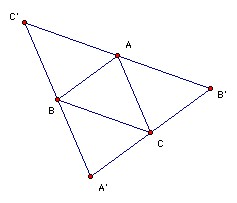
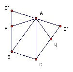

S is a set of 5 coplanar points, no 3 collinear. M(S) is the largest area of a triangle with vertices in S. Similarly, m(S) is the smallest area. What is the smallest possible value of M(S)/m(S) as S varies?
Answer
(1 + √5)/2
Solution
It is easy to check that the ratio is (1 + √5)/2 for a regular pentagon.

Suppose we have any 5 points A, B, C, D, E (no three collinear). Let A, B, C be three points with area ABC = M(S). Let k = 2 M(S)/(1 + √5). We have to show that at least one of the triangles formed by A, B, C, D, E has area ≤ k. Take lines B'C', C'A', A'B' through A, B, C parallel to BC, CA, AB respectively. D must be on the same side of B'C' as BC, otherwise area BCD > area ABC (contradicting the maximality of area ABC). Similarly, it lies on the same side of C'A' as CA, and on the same side of A'B' as AB. So D must lie inside or on A'B'C'. Similarly E.The three triangles A'BC, B'CA, C'BA are disjoint (apart from the 3 points A, B, C, and D and E cannot lie there), so one of the three triangles must be empty of points D, E. So wlog D and E lie inside B'CBC'.
Affine transformations do not affect the ratio of the areas of triangles, but by an affine transformation we can make ABC a 36o, 72o, 72o triangle, so that APBCQ is a regular pentagon. Since AB and CQ are parallel, and also AB and A'B', Q must lie on the segment B'C. Similarly, P must lie on BC'

Suppose D lies in the pentagon. If it lies in ABP, then area ABD ≤ area ABP = k. Similarly if D lies in ACQ. If D lies in ABC, then at least one of ABD, BCD, CAD has area ≤ area ABC/3 < k. Similarly for E. So we may suppose that both D and E lie in APC' or AQB;. If they both lie in the same triangle, then area ADE ≤ area APC' < k. So suppose D lies in ABC' and E in AQB'. Then area ADE = (1/2) AD·AE sin DAQ ≤ (1/2) AP2 sin PAQ = area PAQ = k.

© John Scholes
jscholes@kalva.demon.co.uk
8 Aug 2003
Last corrected/updated 8 Aug 2003